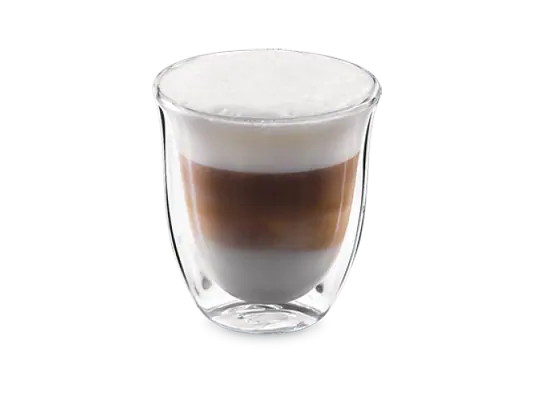

| Кава Нескафе розчинна | Кава натуральна розчинна сублімована, середнього обсмаження, повний насичений смак з легким присмаком кислинки. | 25грн/200г 35грн/350г |
|
| Кава МакКоффі 3в1 | Неперевершений яскравий кавовий аромат, насичений смак та ще більше кави у кожному ковтку. MacCoffee 3 в 1 - це довершеність кавового смаку у виконанні улюбленого MacCoffee 3 в 1 з вершками і цукром. | 35грн/200г 45грн/350г |
|
| Напій з вмістом кави "Русіано" | Фірмовий напій нашого старошого баристи. Освіжаючий шот гарячої горілки з дрібком нашої фірмової робусти. | 15грн/50г 25грн/100г |
|
| Експрессо | Той самий, легендарний експрессо. Напій найвибагливіших поціновувачів кави. Відмінно бадьорить ваш розум та зігріває дупу баристі | 75грн/150г 125грн/300г |
| Капучино |  | Напій на основі еспресо з додаванням збитого парою молока, з гармонійним балансом насиченого солодкого смаку молока та еспресо. | 55грн/200г 65грн/350г |
| Латте | Лáте (англізований та скорочений варіант від італ. caffè latte [kaffellatte] — «кава з молоком») — кавовий напій родом з Італії, що складається з молока (італ. latte) і кави еспресо. | 55грн/200г 65грн/350г |
|
| Еспресо | Міцний кавовий напій, зварений за допомогою нагрітої насиченої водяної пари, пропущеної через обсмажені, дрібно перемелені зерна кавового дерева. | 25грн/50г 45грн/100г |
|
| Флет Вайт | Кавовий напій родом з Австралії, придуманий у 1980-х роках. Готується шляхом додавання спіненого молока з мінімальною кількістю піни (0,5 см) в одинарну або подвійну порцію еспресо. | 35грн/150г 45грн/300г |
| Кемекс | Чистий, відфільтрований, оксамитовий, червонуватого відтінку, з підкресленим смаком — такі відгуки дають шанувальники кави про напій, що приготовлений за допомогою кемексу. | 75грн/200г 135грн/350г |
|
| Сифон | Сифон – це найдавніший з альтернативних способів заварювання. Спосіб приготування, що полягає в тому, що гаряча вода проходить через каву під тиском, придумали в XIX столітті. | 75грн/200г 135грн/350г |
|
| Аеропресс | Для приготування цього напою, мелену каву засипається в колбу, заливається гарячою водою, перемішується і продавлюється в чашку або склянку через фільтр. Напій виходить дуже насиченим і трохи мутнуватим. | 75грн/50г 125грн/100г |
|
| Пуровер | Метод заварювання фільтр-кави, сутність якого полягає в тому, що гаряча вода проходить крізь мелену каву, яка знаходиться у воронці з паперовим фільтром. | 75грн/150г 125грн/300г |